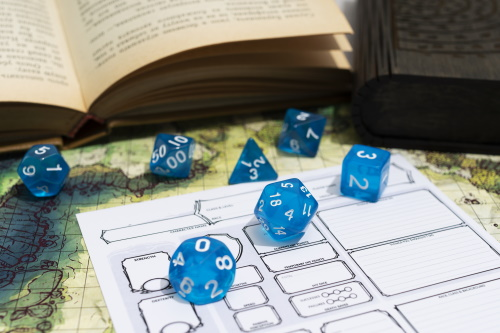

Character Creation
Character Creation is one of the most important parts of playing Dungeons and Dragons. The character you create can have an affect on how you think, act, and play the game. Some players like to optimize their character that they are extremely good at a certain skill or in combat, some create their character solely around the roleplaying possibilities it makes, and some go for a healthy mix of both. It’s up to you to decide how you want to design your character, but here’s some important categories that you should keep in mind.
Balance/Optimization
Although Dungeons and Dragons doesn’t play like a traditional board or dice game, it is still a game. And how you design your character, meaning your class, race, and background, are what decide what you’re able to do in the game and how well you can do it. Choose what the character features in a way that you’ll be able to have fun, but also think about what you want your character to be good at. Sometimes your Dungeon Master will have limitations on some options due to the setting of the game, so they’re an excellent resource to see what can fit into the world. Don’t be afraid to play a certain way because it may seem like you aren’t able to be as cool as other characters but do what you find exciting.
Backstory/Background
Some Dungeon Masters may play the game avoiding a lot of roleplaying or backstory information, but many do. As you design your character, think about who they are. What brought them to where they are today? Do they have family, close friends, or acquaintances that they can talk to? What is their motivation for becoming an adventurer? Use the class, background, and race you choose for your character to better understand who they were before, and who they are now. Work with your Dungeon Master to better understand the setting of the game, and your character will be able to fit into the world comfortably. A character that fits into the world helps you better immerse yourself into the fantasy world and can help the Dungeon Master make the game more fun for you!
Player Player-Friendly
Although you can design your character any way you want, it’s important to keep in mind that you’re going to be playing with other people. You’re going to be put into environments that can require teamwork and communication. If you design a character that doesn’t work well with others, it can lead to making the game less fun for the other players. Characters should have unique personalities but avoid creating and playing them against other player characters. Decide where your characters boundaries are but be ready to have them challenged. Don’t be afraid to challenge other players too!